Nosso cardápio
Massas Longas
-
 Espaguete Clássico:
Massa fina e tradicional servida com molho artesanal de tomate, queijo parmesão ralado e folhas frescas de manjericão. Ideal para quem gosta dos sabores clássicos da culinária italiana.
Espaguete Clássico:
Massa fina e tradicional servida com molho artesanal de tomate, queijo parmesão ralado e folhas frescas de manjericão. Ideal para quem gosta dos sabores clássicos da culinária italiana. -
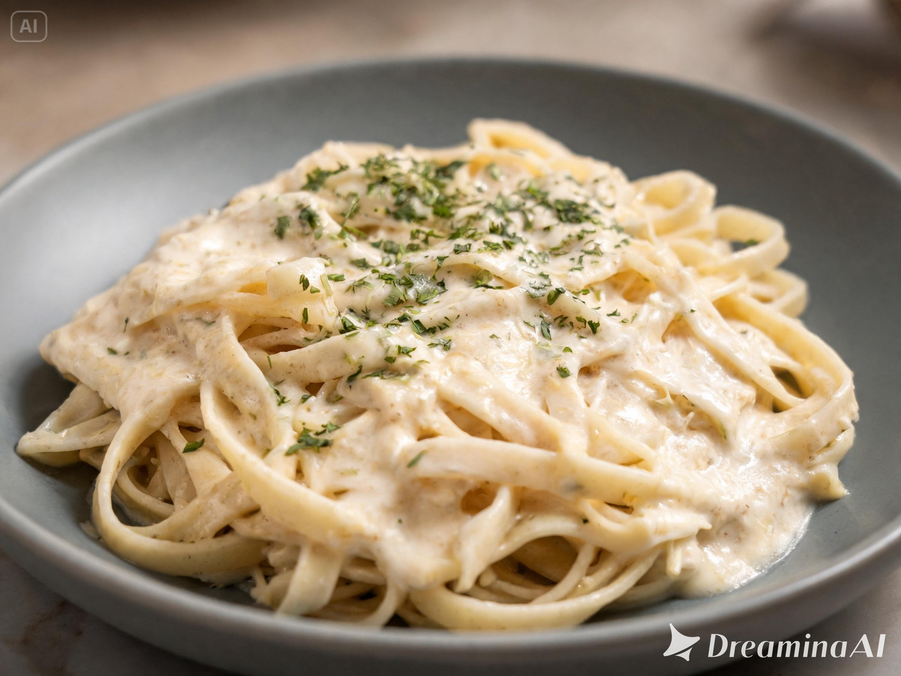
Fettuccine Artesanal: Massa longa e achatada acompanhada de molho branco cremoso, queijo especial e toque suave de ervas finas. -
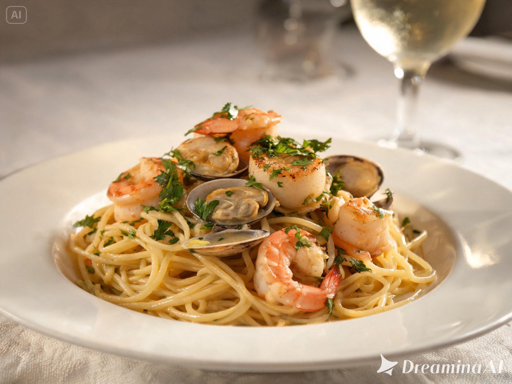
Talharim Premium: Talharim fresco preparado com molho especial da casa, cubos de bacon crocante e finalização com parmesão. -
 Linguine Italiano:
Massa sofisticada servida com molho leve amanteigado, ervas frescas e frutos do mar selecionados.
Linguine Italiano:
Massa sofisticada servida com molho leve amanteigado, ervas frescas e frutos do mar selecionados. -
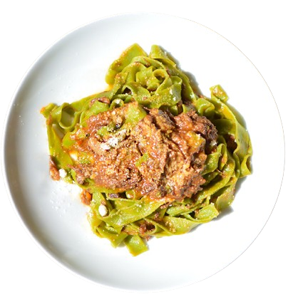
Pappardelle Rustico: Fitas largas artesanais acompanhadas de molho bolonhesa encorpado, carne temperada lentamente e queijo ralado.
Massas Curtas
-
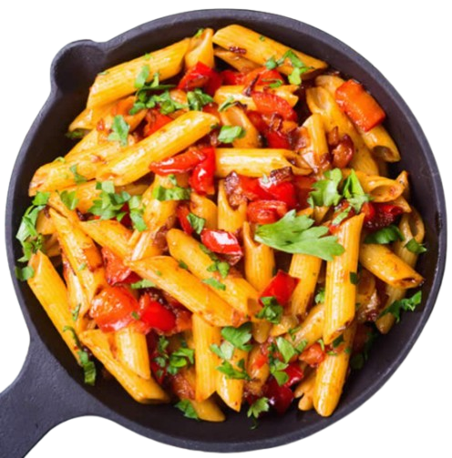
Penne Tradicional: Penne servido com molho de tomate artesanal, carne moída temperada e finalização com parmesão fresco. -
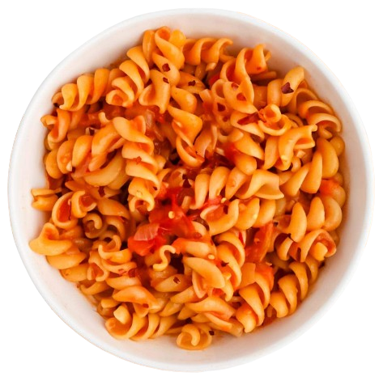
Fusilli Especial: Massa em espiral preparada com molho cremoso, presunto em cubos, ervilhas e toque de ervas italianas. -
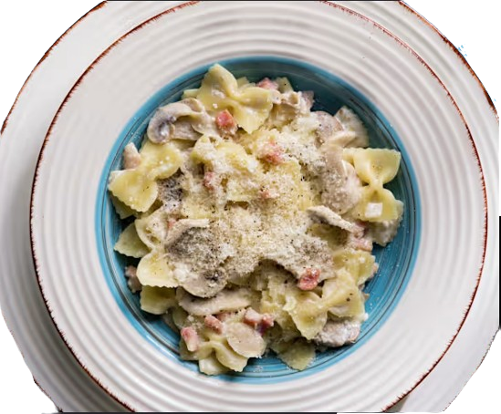
Farfalle Gourmet: Massa gravata acompanhada de tomates cereja, molho leve e queijo especial da casa. -
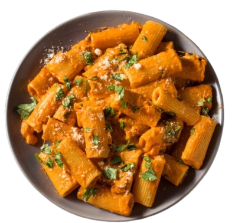
Rigatoni Italiano: Rigatoni com molho vermelho encorpado, pedaços de carne e cobertura generosa de queijo parmesão. -
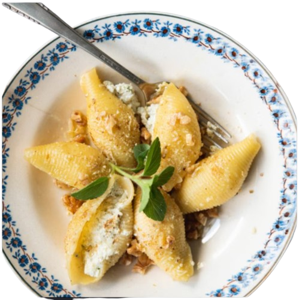
Conchiglie Recheável: Massas em formato de concha recheadas com ricota cremosa e ervas, cobertas com molho artesanal gratinado.
Massas Recheadas
-
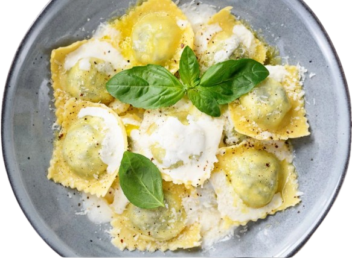
Ravioli de Queijo: Raviolis recheados com blend especial de queijos, servidos ao molho branco cremoso e ervas finas. -
 Ravioli de Carne:
Massa recheada com carne temperada lentamente, acompanhada de molho italiano artesanal e parmesão.
Ravioli de Carne:
Massa recheada com carne temperada lentamente, acompanhada de molho italiano artesanal e parmesão. -
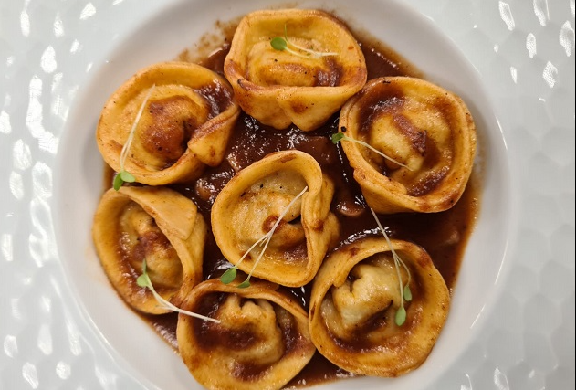
Capeletti Tradicional: Pequenas massas recheadas com frango e queijo, servidas em molho leve e aromático. -
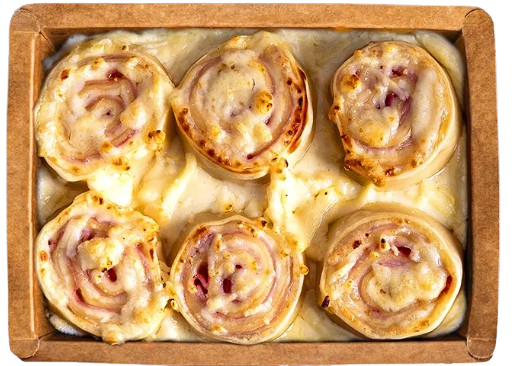
Rondelli Especial: Massa enrolada recheada com presunto e queijo, coberta com molho vermelho gratinado ao forno. -
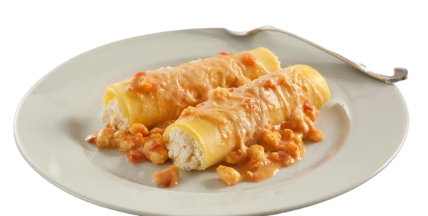
Cannelloni Cremoso: Cannelloni recheado com ricota e espinafre, servido ao molho branco com queijo gratinado.
Massas Assadas
-
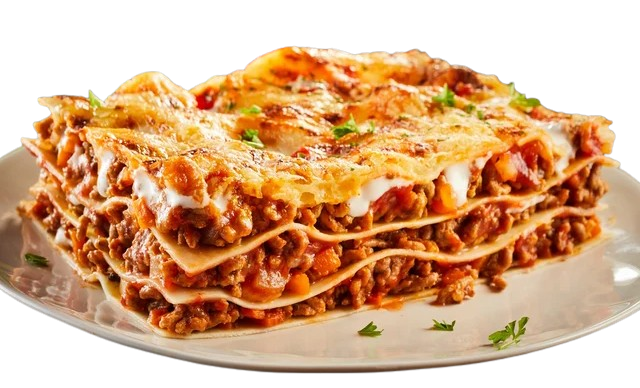
Lasanha Italiana: Camadas de massa fresca, molho bolonhesa, queijo derretido e temperos especiais preparados artesanalmente. -
 Nhoque ao Forno:
Nhoque macio servido com molho especial, queijo gratinado e ervas frescas.
Nhoque ao Forno:
Nhoque macio servido com molho especial, queijo gratinado e ervas frescas. -
 Pasta Gratinata:
Massa assada ao forno com molho cremoso, mix de queijos e cobertura dourada crocante.
Pasta Gratinata:
Massa assada ao forno com molho cremoso, mix de queijos e cobertura dourada crocante.